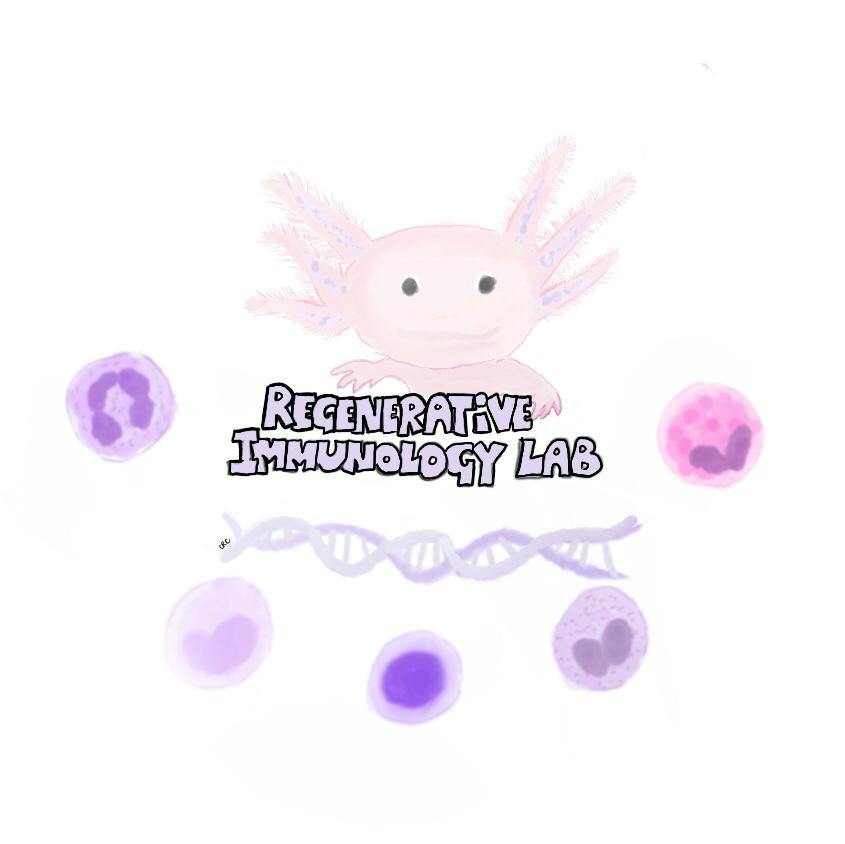

<div class='container'>
    <header class="masthead text-center">
      

      <p>
      <i>Regenerative Immunology.<br> Wallenberg Centre for Molecular Medicine.<br> Division of Molecular Medicine and Gene Therapy.<br>
      Department of Laboratory Medicine.<br>
      Lund University.</i>

        <span style="display: block; margin-bottom: 3em"></span>

<link rel="stylesheet" href="https://embedbsky.com/embedbsky.com-master-min.css" />
<div id="embedbsky-com-timeline-embed"></div>
<script>
    let containerWidth = 0, containerHeight = 0;
    const getHtml = async (url) => {
        const response = await fetch(url);
        return response.status !== 200 ? '<p><strong>No feed data could be located</p></strong>' : response.text();
    };
    document.addEventListener('DOMContentLoaded', async () => {
        const timestamp = (new Date).toISOString();
        const embedContainer = document.getElementById('embedbsky-com-timeline-embed');
        embedContainer.style.width = "100%";
        embedContainer.style.height = `${containerHeight}px`;
        const htmlContent = await getHtml(`https://embedbsky.com/feeds/b80989407eb1f90a00b8057fa1634ea4392f49f0ca1f1dd2d6d0e8dbb7b27bb1.html?v=${timestamp}`);
        embedContainer.innerHTML = htmlContent;
    });
</script>


#    <div class='jekyll-twitter-plugin' align="center">
#    <div class='jekyll-twitter-plugin'><a class="twitter-timeline" data-width="500" data-tweet-limit="5" href="https://twitter.com/niche_leigh?ref_src=twsrc%5Etfw">Tweets by niche_leigh</a>
#<script async src="https://platform.twitter.com/widgets.js" charset="utf-8"></script>
</div>


